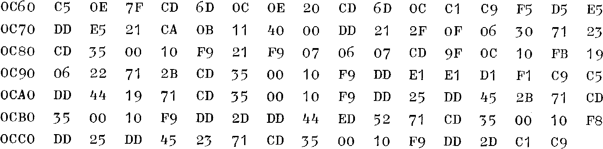

INMC News |
Christmas 1979 · Issue 5 |
| Page 23 of 38 |
|---|
This episode has been re-written about five times, due to rapid advances in the development of Marvin, and the influence of Doctor Dark’s elderberry wine, (more powerful than a Z8000!) Doctor Dark strongly recommends the manufacture of wines in the computer room, as the carbon dioxide produced in the fermentation process is very good for putting out electrical fires.....
Marvin now has a new monitor, Nasbug T4, and as a result, I have decided that Marvin doesn’t really need Nas-Sys after all. I have now almost forgotten how boring it was waiting for the tape recorder all the time, and of course am much less likely to suffer Electricity Board repression now, thank goodness.
Richard Beal said in INMC News No 3, that programs written for T2 would run under T4. This is almost entirely true, but not if you try to run a program where the @ key has to be used during the program. No problem, use another key to solve that one. When all else had failed, I had a look at the instructions, where I found a diagram of the keyboard, with the @ key marked as the control key. What does it control, Richard? (Try it, or read the manual! – Ed).
Another addition to Marvin made recently is a 16K RAM board, naturally this means a buffer board and mother board too – then I fastened it all in a Vero-frame to stop it flapping in the breeze. The telly couldn’t be put on the top, which is wide open, so I made a chipboard box and cured Marvin’s agorophobia once and for all. Has anyone else noticed how difficult it is to solder chipboard?
Those of you who remember me mentioning Darkbug will be thinking T4 has put paid to that idea, perhaps. The answer is no, because the 16K RAM board just happens to have four sockets for 2708 EPROMs. Darkbug is going to be bigger and better than I had first intended, and will now be known as Darkbug 4K, Here is an extract, re-written for the RAM on the main board, so you can all use it!
| Page 23 of 38 |
|---|